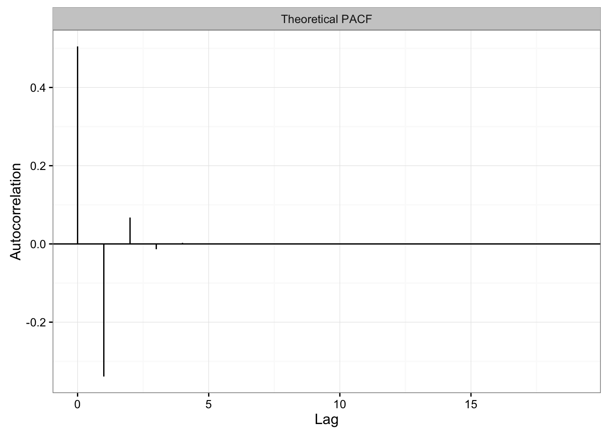
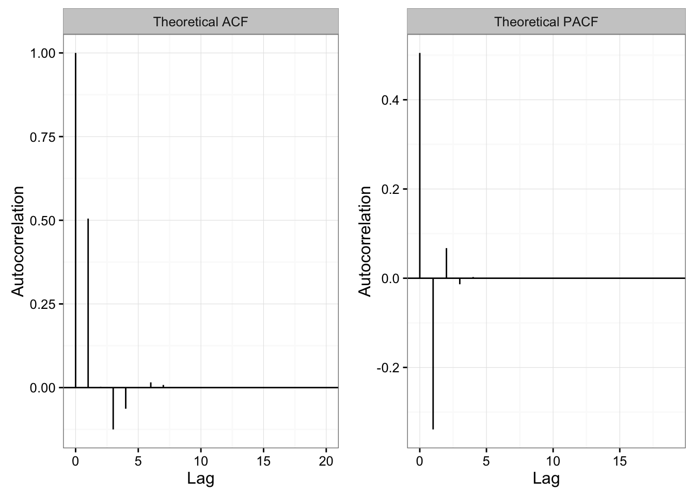
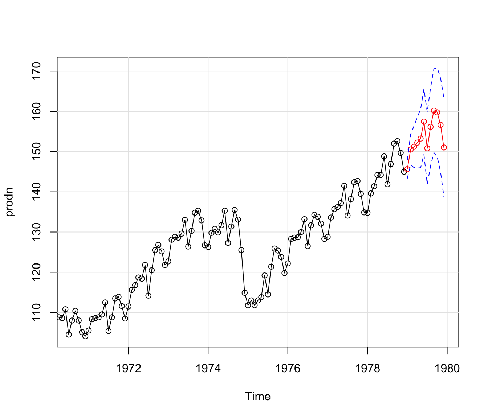

Experimental Time Series Features
JJB
2016-11-05
Introduction
The package as it presently stands contains functions that are being used within Fall 2016 courses at the University of Illinois at Urbana-Champaign (UIUC). Specifically, students are using these functions within STAT 578 (Special Topic): Time Series Forecasting and STAT 429: Time Series Analysis. Presently, the functions are meant to provide students with the ability to interact with time series data. All functions will eventually end up either moving to a different package (perhaps gmwm) or may end up being removed.
Pipable Time Series Functions
Outside of being used as an educational and practical tool, the package also serves to provide tenets of pipable data within a time series context. Thus, the package is primarily designed with the notion of the piping operator (%>%) fully in play as well as other R related tools like dplyr and tidyr. As this package is experimental, the implementations may shift significantly.
Installation Instructions
Presently, the package can only be obtained through GitHub. Plans for a CRAN-based release are tentative. At some point, this may be added to SMAC’s package mirror for the install.
Installing the package through GitHub (Developmental)
For users who are interested in having the latest and greatest developments within time series, this option is ideal. Though, there is considerably more work that a user must do to have a stable version of the package. The setup to obtain the development version is platform dependent.
Specifically, one must have a compiler installed on your system that is compatible with R.
For help on obtaining a compiler consult:
Generally speaking, Linux users should have a compiler that is compatible with R already installed on their system.
With the system dependency taken care of, we continue on by installing the R specific package dependencies and finally the package itself by doing the following in an R session:
# Install dependencies
# install.packages("devtools")
# Install the package from GitHub without Vignettes/User Guides
devtools::install_github("SMAC-Group/exts")
# Install the package from GitHub with Vignettes/User Guides
# Note: This will be a longer install as the vignettes must be built.
devtools::install_github("SMAC-Group/exts", build_vignettes = TRUE)Empirical and Theoretical (R)ACF and PACF
One of the key features of time series resolves around understanding the dependency that exists between observations using autocorrelation. There exists four built in functions that enable the computation of the (Robust) Autocorrelation Function [(R)ACF] and Partial Autocorrelation Function (PACF). These functions come in two flavors:
- empirical or sample-based via
emp_ - theoretical ARMA processes via
theo_
The prior function handles . The later is restricted to only analyzing autoregressive moving average processes through the ARMA() object found in gmwm.
To tell what kind of function was graphed, the graph heading will contain either “Empirical” or “Theoretical” along side the type of computation (e.g. (R)ACF or PACF).
Empirical (emp_) (R)ACF and PACF
Empirical graphs for (R)ACF and PACF are great for analyzing sample time series data to determine the dependency structure.
# Set seed for reproducibility
set.seed(8672)
# Generate an AR1
xt = gen_gts(1000, AR1(phi = 0.6, sigma2 = 1))
# Obtain the empirical ACF
vals = emp_acf(xt)
autoplot(vals)# Obtain the empirical RACF (Robust ACF)
vals = emp_acf(xt, robust = TRUE)
autoplot(vals)# Obtain the covariance
vals = emp_acf(xt, type = "covariance")
autoplot(vals)# Obtain the empirical PACF
vals = emp_pacf(xt)
autoplot(vals)# Obtain both the empirical ACF & PACF
vals = emp_corr(xt)
autoplot(vals) Theoretical (theo_) ACF and PACF graphs for ARMA Models
Theoretical graphs for ACF and PACF are also available separately via theo_acf() and theo_pacf() or combined into one via theo_corr().
model = ARMA(ar = c(.50, -0.25), ma = .20)
# Theoretical ACF
vals = theo_acf(model)
autoplot(vals)# Theoretical PACF
vals = theo_pacf(model)
autoplot(vals)
# Create a theoretical graph
vals = theo_corr(model)
autoplot(vals)
Exploratory Data Analysis [EDA] (eda_())
Exploratory Data Analysis allows for visually and quantitatively obtaining graphing information.
Observe ACF and PACF Graphs
Often times, it is helpful to observe the time series, ACF, and PACF graphs together. To do so, use:
# Bring in time series data
xt = gts(log(lynx), start = 1821, freq = 1)
# Obtain Empirical ACF & PACF alongside data
vals = eda_ts(xt)
# Graph Data, Empirical (R)ACF, and Empirical PACF
autoplot(vals)Compare Classical and Robust ACF
To observe difference between the classical and robust ACF, one can use compare_acf()
# Bring in time series data
xt = gts(log(lynx), start = 1821, freq = 1)
# Obtain the ACF values
vals = compare_acf(xt)
# Graph data
autoplot(vals)
Data Transform Previews
Often times, it is helpful to transform the data to attempt to make the time series appear stationary.
# Default transforms
vals = eda_change(gnp)
autoplot(vals)# Default transforms but applied together in the second case
vals = eda_change(gnp, both = TRUE)
autoplot(vals)# Different Transforms and applied separately in the second case
vals = eda_change(gnp, t1 = sqrt, t2 = log10)
autoplot(vals)Diagnostic Functions
The style for diagnostic features has all functions being prefixed by diag_. Each function has its own graphing utility that can be called with either autoplot or plot as before.
Residual extraction and standardization (diag_resid)
Residuals are able to be extract from arima and lm classes in addition to manipulated to be standardized via resid / sd(resid) through a std = TRUE flag.
# Extract and standardize residuals
model = arima(sunspot.year, c(9,0,0))
resids = diag_resid(model, std = TRUE)
# Graph Histogram
autoplot(resids, type = "hist")# Graph Histogram
autoplot(resids, type = "resid")# Graph Histogram
autoplot(resids, type = "both") Quantile-Quantile Normal Plot (diag_qq)
The diag_qq plot creates a quantil-quantile plot that contains a fitted normal line. Typically, this plot is used to evaluate the residuals of a model.
# Observing residuals of an Arima process
model = arima(sunspot.year, c(9,0,0))
vals = diag_qq(model, std = TRUE)
autoplot(vals)# Observe time series
vals = diag_qq(sunspot.year, std = TRUE)
autoplot(vals) Wavelet Variance (WV) Estimate of White Noise (diag_wv)
Wavelet Variance provides an estimation technique to display whether the observed process is a White Noise. If the orange line follows the dark blue line closely or remains within the blue confidence interval, then the process is likely to be a white noise.
# White Noise Process
model = arima(sunspot.year, c(9,0,0))
vals = diag_wv(model)
autoplot(vals)Portmanteau Tests
The package provides a convient wrapper into R‘s Box.test() function that separates the different tests, ’Ljung-Box’ and ‘Box-Pierce’, to assess the null hypothesis of independence in a given time series. The function makes available a data.frame containing: lag, p_value, statistic for each of the tests run that can then be used to achieve a diagnostic plot like so:
# Ljung-Box test
model = arima(sunspot.year, c(9,0,0))
vals = diag_ljungbox(model)
autoplot(vals)# Box-Pierce Test
vals = diag_boxpierce(model)
autoplot(vals)Residual vs. Fitted Values (Developmental)
Warning: The inputs for this function will change.
One further useful plot is to compare the residuals to the fitted values.
xt = sunspot.year
model = arima(xt, c(9,0,0))
# Note additional manipulation is required outside the function
# to obtain the two parameters are required
resids = resid(model)
fit = xt - resids
vals = diag_fitted(fit, resids)
autoplot(vals)Master Diagnostic Plot (Developmental)
Warning: This function will change in the future to adhere more to a chained argument
Each of the diagnostic plots are available standalone. However, there is benefits to plotting all of the diagnostic information simultaneously. Hence, the diag_ts() function that will calculate all of the above values and provide a diagnostic plot.
# Observing residuals of an Arima process
xt = sunspot.year
model = arima(xt, c(9,0,0))
# Note two parameters are required
vals = diag_ts(model, xt)
autoplot(vals)Selecting an appropriate time series model
There are many ways to go about selecting an ideal time series model. Within the package there are select_arima(), select_arma(), select_ar(), and select_ma() functions that build all of the time series models alongside multiple Information Criterion (IC) such as:
- Akaike information criterion (AIC): \(AIC = - 2{L_{\max }} + 2k\)
- Bayesian information criterion (BIC): \(BIC = - 2{L_{\max }} + klog(n)\)
- Hannan–Quinn information (HQC): \(HQC = - 2{L_{\max }} + 2k\log \left( {\log \left( n \right)} \right)\).
where \(L_{\max }\) is the log-likelihood, \(k\) is the number of parameters, and \(n\) is sample size.
To acess the best model according to one of the criteria, use: best_model(x, ic="aic")
Selecting one dimension select_ar() and select_ma()
# Bring in time series data
xt = gts(diff(log(gnp)), start = 1700, freq = 1)
model_info = select_ar(xt, p.min = 1, p.max = 8)
# Obtain a plot of the model selection criteria
autoplot(model_info)# Obtain the best model (AIC is default)
best_model(model_info)##
## Call:
## arima(x = xt, order = c(4, 0, 0), include.mean = include.mean)
##
## Coefficients:
## ar1 ar2 ar3 ar4 intercept
## 0.3141 0.1318 -0.0719 -0.1159 0.0083
## s.e. 0.0665 0.0698 0.0697 0.0664 0.0008
##
## sigma^2 estimated as 8.735e-05: log likelihood = 722.24, aic = -1432.47# Obtain the best model with BIC
bmodel = best_model(model_info, ic = "bic")
bmodel##
## Call:
## arima(x = xt, order = c(1, 0, 0), include.mean = include.mean)
##
## Coefficients:
## ar1 intercept
## 0.3467 0.0083
## s.e. 0.0627 0.0010
##
## sigma^2 estimated as 9.03e-05: log likelihood = 718.61, aic = -1431.22# See the ACF of the residuals for the model
vals = emp_corr(bmodel)
autoplot(vals)
Selecting multiple dimensions select_arima() and select_arma()
Warning: These procedures have been known to have issues with the initial range of parameters to attempt. You may wish to change default *.min and *.max when applicable. At a later time, support for functional errors should resolve this issue.
# Bring in time series data
xt = gts(diff(log(gnp)), start = 1700, freq = 1)
model_info = select_arma(xt, p.max = 4, q.max = 3)
# Obtain a plot of the model selection criteria
autoplot(model_info)
# Obtain the best model (AIC is default)
best_model(model_info)##
## Call:
## arima(x = xt, order = c(3, 0, 2), include.mean = include.mean)
##
## Coefficients:
## ar1 ar2 ar3 ma1 ma2 intercept
## 1.6742 -1.3104 0.2351 -1.4045 1.0000 0.0083
## s.e. 0.0666 0.0974 0.0656 0.0196 0.0234 0.0009
##
## sigma^2 estimated as 8.22e-05: log likelihood = 726.62, aic = -1439.25# Obtain the best model with BIC
bmodel = best_model(model_info, ic = "bic")
bmodel##
## Call:
## arima(x = xt, order = c(1, 0, 0), include.mean = include.mean)
##
## Coefficients:
## ar1 intercept
## 0.3467 0.0083
## s.e. 0.0627 0.0010
##
## sigma^2 estimated as 9.03e-05: log likelihood = 718.61, aic = -1431.22# See the ACF of the residuals for the model
vals = emp_corr(bmodel)
autoplot(vals)Forecasting Abilities
Other Packages
The textbook “Time Series Analysis and Its Applications: With Examples in R” (ASTSA) provides the astsa package. This package is able to provide better forecasting when it comes to model fitting temporarily. The code below is found on page 165 of the ASTSA text.
library("astsa")
pred = sarima.for(prodn, 12, 2, 1, 1, 0, 1, 3, 12) # forecast